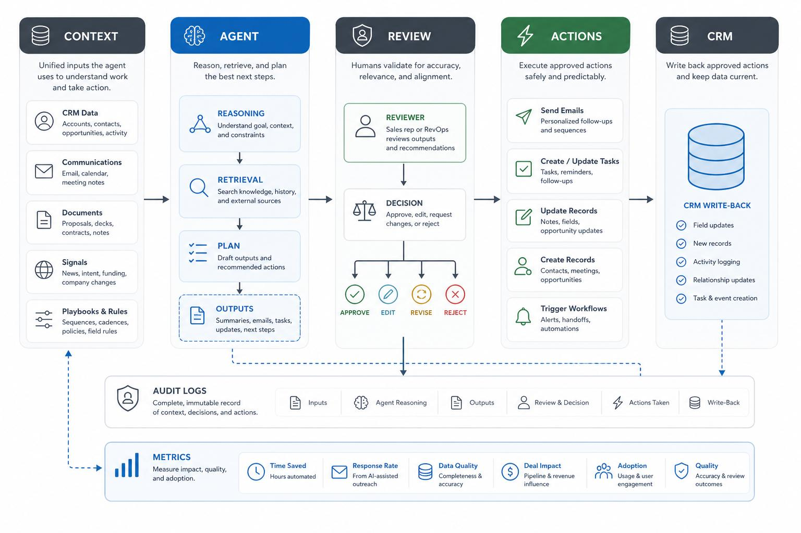

Smoking Chef · արտադրանքի մանրամասներ
Սննդի արշավի մոտիկ կադր։
Նախագծում եմ գործնական n8n և AI հոսքեր, անհատական կայքեր ու կինեմատոգրաֆիկ գովազդային ֆիլմեր՝ մարդկային ստեղծագործական հայացքով։
Նախադիտումը ցուցիչի վրա պահելիս լուռ է․ սեղմեք տեսանյութը՝ բնօրինակ ձայնը լսելու համար։
Սննդի արշավի մոտիկ կադր։
Արտադրանքի շուրջ կառուցված տեսողական պատմություն։
Արտադրանքի պայծառ, դանդաղաշարժ պահ։
Ոճավորված և էներգիայով լի տեսարան։
Մթնոլորտային ուսումնասիրություն՝ կերպարի շուրջ։
Ստուդիայի կարճ ներկայացում՝ տեսախցիկի առաջ։
Կինեմատոգրաֆիկ պահ արշավի համար։
AI-ի աջակցությամբ ստեղծված կարճ տեսողական փորձ։
Հստակության համար նախագծված, հոգատարությամբ ստեղծված։
Փոխկապակցված հոսքեր՝ նախագծերի կառավարման, մուտքային նամակների, օրական ամփոփումների և պլանավորման համար։ Էկրանի ձայնագրություններն ու աշխատանքային հոսքերի պատկերները ներկայացված են այստեղ։
Նպատակը վերածում է առաքելության, կազմում է փոքր առաջադրանքների պլան, պահպանում է դրանց վիճակը և ցուցադրում ընթացքը աշխատանքային հոսքի վերջնակետերով։
28 հանգույցՍտեղծում և որոնում է նախագծի գրառումներ, ստուգում է կարգավիճակի փոփոխությունները և վճարման ապացույցները, իսկ իրադարձությունների դեպքում կանչում է ծանուցման հոսքերը։
25 հանգույցAI-ի միջոցով ամփոփում է նամակները, ուղղորդում է Telegram հրամանները և օգնականը կապում է Gmail-ի ու CRM գործողությունների հետ։
22 հանգույցՀավաքում է նախագծերի գրառումները, առաջադրանքներն ու նոր նամակները, կազմում է կարճ պարսկերեն ամփոփում և ուղարկում Telegram։
11 հանգույց

Դիզայն, ծրագրավորում և կինեմատոգրաֆիկ AI տեսանյութերի արտադրություն՝ անկախ ստեղծագործական ստուդիայում։
Արագ, հարմարվող կայքեր՝ հստակ հաջորդ քայլերով։
Կինեմատոգրաֆիկ թիզերներ, գովազդներ և թվային պատմություններ։
Հասկանալի օգտատիրոջ ուղիներ, դիզայնի համակարգեր և ժամանակակից թվային միջերեսներ։
Մտածված ռիթմ, գույն, ձայն և հետարտադրություն՝ հղկված արդյունքի համար։
Տարբերվող բրենդային համակարգեր, տառատեսակներ և միասնական տեսողական ուղեցույցներ։
Բրենդի տեսողական լեզվին հարմարեցված prompt-եր և մոդելների հոսքեր։
SESEMI-ի բրենդային ներկայացման ընտրված էջերը՝ երկու ուղղություն, վեց ծառայություն, մարդկային ղեկավարությամբ գործընթաց և անհատական մոտեցում յուրաքանչյուր բրենդի համար։
Հստակ ուղի՝ առաջին զրույցից մինչև գործարկում և վերջնական հանձնում։
Ծանոթանալ լսարանին, կարիքներին, սահմանափակումներին և հաջողության չափանիշներին։
Կարևոր համատեքստը վերածել հստակ ծավալի, կառուցվածքի և ստեղծագործական ուղղության։
Աշխատանքը դարձնել տեսանելի, կիսվել առաջընթացով և կատարելագործել՝ մարդկային ստուգմամբ։
Հանձնել պատրաստ ֆայլերը, գործող համակարգերը և պարզ հաջորդ քայլերի ուղեցույցը։

Ես Մերսադ Ջավիդին եմ՝ SESEMI-ի հիմնադիրը։ Աշխատում եմ n8n հոսքերի նախագծման, AI-ի ու API-ների ինտեգրման, թվային փորձառությունների և AI-ի աջակցությամբ արշավային բովանդակության վրա։
Կիսվեք նպատակով և պատրաստ նյութերով։ Միասին կսահմանենք գործնական առաջին քայլը։